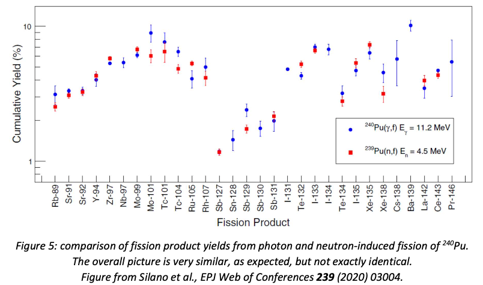
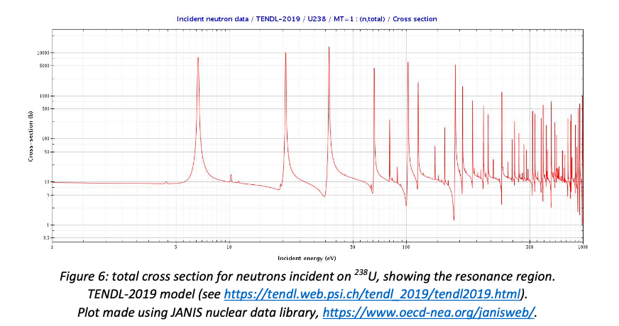

8. Compound/Photon reactions#
Quick Links
8.1. Introduction#
In compound-nucleus reactions, the projectile and target merge to form a single object, which subsequently decays. The kinetic energy of the projectile is all transferred to the compound nucleus (though it isn’t all available for conversion to mass, because momentum must still be conserved).
8.2. Characteristics of compound-nucleus reactions#
Because the compound nucleus has a finite lifetime, compound-nucleus reactions have a longer timescale than direct reactions, typically \(10^{-18} – 10^{-16}\) s, i.e. at least 10000 times longer than the direct reaction timescale.
It is worth noting here that this timescale has in fact been measured: it is not just a theoretical prediction. One measurement method is the crystal blocking effect in \((p,p’)\) reactions: if the target is a single crystal, its atoms are aligned in the lattice and can block scattered protons in particular directions, so the angular distribution has narrow dips corresponding to this. If a compound-nucleus reaction takes place, the transfer of momentum makes the struck nucleus move away from its lattice point, reducing the blocking effect. The longer the compound-nucleus lifetime, the further out of alignment it is when it decays, so the change in the amount of blocking and the angles at which it occurs can be used to deduce the lifetime.
Because the reaction takes place in two stages, the angular distribution of the products (measured in the centre of mass frame, to remove the effect of momentum conservation) is not correlated with the direction of the incoming projectile, in contrast to the forward-peaked angular distribution of direct reactions. The independence of the production and decay of the compound nucleus was first proposed by Niels Bohr, and is often called the Bohr independence hypothesis.

The independence hypothesis essentially says that the reaction \(a + A → C* → B + b\) factorises into two halves: \(a + A → C*\) and \(C* → B + b\). Its cross section is therefore given by
where \(BR(C* → B + b)\) represents the branching ratio of the excited nucleus \(C*\) into the final state \(B + b\). This can be tested by comparing the results of different projectile/target combinations which should produce the same compound nucleus. Results of such tests generally confirm the broad expectations of the independence hypothesis, albeit with some differences in detail (see for example figure 5).
8.3. Resonances#
The probability of a compound-nucleus reaction is greatly enhanced if the centre-of-mass energy of the projectile-plus-target system coincides with an excited state of the compound nucleus. This produces a spike in the cross section known as a resonance (see figure 6).

In a compound-nucleus reaction \(A(a, b)B\), the shape of the resonance corresponding to an excited state with energy \(E_R\) and spin \(J\) is given by the Breit-Wigner distribution
where \( \lambda = \frac{h}{p} \) is the de Broglie wavelength of the projectile and \( \Gamma(E) \) is the width of the resonance, which is determined by the Heisenberg uncertainty principle, \( \Gamma = \frac{h}{\tau} \) where \( \tau \) is the lifetime of the state.
\( \Gamma_a \) and \( \Gamma_b \) are called partial widths, and are essentially the branching ratio of the compound nucleus into that particular state,
The shape of the Breit-Wigner distribution is determined mainly by \( (E - E_R)^2 + \Gamma(E)^2/4 \), and is shown in figure 7. The width \( \Gamma \) is the full width of the distribution at half the maximum height (you can verify this from the equation, assuming that all the other factors are roughly constant). Using the uncertainty principle and the typical timescale of compound-nucleus reactions, you can see that \( \Gamma \) should be around \(10~\textnormal{eV} – 1~\textnormal{keV}\).
The shapes of the resonances in figure 6 do not look like figure 7: they have a pronounced asymmetry, with a dip in the cross section before the resonant rise. This is caused by interference between the resonance and non-resonant elastic scattering off the nuclear potential. This can be verified by comparing the \((n,\gamma)\) reaction, where there is no interference, with the total cross section, as shown in figure 8: the resonance shapes in \((n,\gamma)\) are much more symmetrical.
Note
Note that the log scales of figures 6 and 8 exaggerate both the width and the asymmetry of the resonances - on linear scales they appear as sharp spikes.
{kind=link}
{kind=link}
As can be seen from the form of the Breit-Wigner, the height of the resonance peak is proportional to \(2J + 1\), and can therefore be used to deduce the spin of the excited state.
8.4. Summary: direct and compound-nucleus reactions#
To summarise:
Direct reactions are fast \((\sim10^{-22}~\textnormal{s})\) reactions in which the projectile interacts with a small number of nucleons near the surface of the target nucleus. They are characterised by a forward peaked angular distribution of the ejectile(s) and are more likely with high-energy projectiles (\(>10~\textnormal{MeV}\) or so). The important observables in direct reactions are the ejectile angular distribution (for optical model calculations) and energy spectrum at fixed angle (to map excited states of the daughter nucleus).
Compound-nucleus reactions are slower (\(~10^{-18} - 10^{-16} s\)) reactions in which the projectile merges with the target nucleus. They are characterised by a fairly isotropic ejectile angular distribution and are more likely with low-energy projectiles. The decay mode of the compound nucleus is expected to be independent of the way it was formed. The important observable for compound-nucleus reactions is the cross section as a function of projectile energy, which should exhibit narrow resonances corresponding to excited states of the compound nucleus.
Photonuclear reactions The nuclear reactions considered above all assume nuclear projectiles (typically small objects such as protons, neutrons, deuterons and alpha particles, but heavier ions are also used). It is, however, also possible to use photons as probes of nuclear structure.
The problem with using photons is that they are much more likely to interact with the electrons in the target, or with the electric field of the nucleus, than with the nucleus itself. By far the dominant contributions to the cross section for photon absorption in solid targets are the photoelectric effect (i.e. liberation of electrons) below 1 MeV photon energy and pair-production in the electric field of the nucleus above 1 MeV. However, high-intensity sources of MeV-energy photons are available (see below), so photonuclear reactions can be studied and do have some practical applications.
8.4.1. Photon sources#
Very high-energy photons are produced using electron beams. There are two main methods, shown schematically in figure 9.
{kind=link}
These methods are complementary rather than competitive: bremsstrahlung beams have a wide energy range and can therefore be used to study the energy dependence of the reaction (especially in “tagged” beams where the momentum of the scattered electron is measured by inserting a strong magnetic field immediately after the radiator), while laser backscattered beams can be tuned to a particular energy to investigate a specific excited state.
8.4.2. Photon absorption by a nucleus#
As with compound-nucleus reactions, photon absorption will be much more probable if the centre-of-mass energy matches an excited state of the nucleus (in this case, since the photon does not change the numbers of protons and neutrons, an excited state of the target nucleus). Excited states that can be reached by electric dipole transitions, \( \Delta l = \pm 1 \), are preferred because the photon has spin 1. The photon carries momentum \( p = E_\gamma / c \), and this momentum must be transferred to the target, so the target kinetic energy (assuming \( E_\gamma \ll M_nc^2 \)) is \( E_{rec} = p^2 /2M_n = E^2_\gamma /2M_nc^2 \). This energy is not available to excite the nucleus, so the excitation energy is \( E_\gamma - E_{rec} \).
For a typical mid-table nucleus with a mass of \(50 \textnormal{GeV/c}² ~(≈ 54 u)\) and a \(5~\textnormal{MeV}\) photon, the recoil kinetic energy is \(0.25~\textnormal{keV}\). This is less than the width of most resonances, so in general the de-excitation photon will not be able to re-excite another nucleus to the same excited state.
The final state of a photonuclear reaction depends on whether the photon energy is above or below the separation energy, i.e. the energy required to remove a proton or a neutron from the target nucleus (typically this is of order 8 MeV) as shown in figure 10. If the photon energy is below the separation energy, the result of the interaction will be an excited state of the target, which will de-excite by emitting one or more photons (depending on whether it returns directly to the ground state or cascades down through intermediate states): this is known as nuclear resonance fluorescence. If the photon energy is above the separation energy, it can knock out one or more nucleons, a process known as photodisintegration (Zilges et al. call it photodissociation, which is probably a better name, but less commonly used).
8.4.3. Nuclear resonance fluorescence#
Nuclear resonance fluorescence is a useful technique for studying excited states of nuclei. Because the incoming photon beam and be polarised, and the polarisation of the outgoing photons can be measured, the spin and parity assignments of excited states can be investigated using the angular distribution of the scattered photons. Zilges et al. (Prog. Nucl. Part. Phys. 122 (2022) 103903) list the properties that can be explored by photonuclear reactions as:
γ-ray transition energies \(E_\gamma\)
level energies \(E_x\) and placements of γ-ray transitions in the nuclear level scheme
multipolarities \(l\)L of γ-ray transitions (i.e. dipole, quadrupole etc.)
spin quantum numbers \(J\) of nuclear levels
parity quantum numbers \(\pi\) of nuclear levels
γ-decay branching ratios \(\Gamma_f/\Gamma_i\)
\(K\)-quantum numbers of nuclear levels
multipole-mixing ratios \(\delta\) of γ-ray transitions
integrated photonuclear resonance cross sections \(\sigma(\theta)\)
partial decay widths \(\Gamma_{f, mL}\)
total level widths \(\Gamma\)
level lifetimes \(\tau\)
reduced excitation strengths \(B(ML; g.s. → J^\pi)\)
decay transition strengths \(B(IL; J^\pi → J'^\pi)\).
In addition to this, nuclear resonance fluorescence can be used for non-destructive assaying of materials, because the energies of the emitted γ-rays are characteristic of the particular element. MeV-energy γ-rays are quite penetrating, so this technique has the potential to be used for checking the contents of sealed containers. Suggested applications include scanning for special nuclear materials (by looking for the signatures of uranium and plutonium isotopes) and drugs (by looking at the ratios of C, N and O).
8.4.4. The giant dipole resonance#
The most obvious feature seen in photonuclear reactions above the nucleon separation energy is the giant dipole resonance, which is a broad peak in the cross section at photon energies of ~25 MeV in light nuclei, decreasing to ~13 MeV for heavy nuclei. For mass numbers above 50 or so, the peak energy is reasonably well described by the Migdal model, in which the proton and neutron populations are interpenetrating liquids; this gives \(E_m = 75A^{-1/3}\) for the energy of the resonance maximum.
In the liquid-drop model, the giant dipole resonance can be seen as a collective excitation in which the whole population of protons in the nucleus oscillates with respect to the whole population of neutrons. More detailed calculations involve summing up contributions from dipoles formed by a nucleon excited from a filled shell and the “hole” it leaves behind (similar to the concept of electrons and holes in semiconductors).
An interesting feature of the giant dipole resonance is that if the nucleus is not spherical, the resonance will increase in width and eventually become double-humped, as can be seen for different isotopes of samarium in figure 11. This is understandable in the collective excitation model: if the nucleus has two different characteristic radii, the excitation will have two different resonant frequencies.
(In figure 11, the quadrupole deformation parameter δ is defined as \( (b-a)/(R) \), where the nucleus is assumed to be a spheroid with two axes of length a and one of length b (thus δ is positive for a prolate (rugby-ball) spheroid and negative for an oblate (flattened) one). The mean radius (R) is taken to be \(1.2A^{1/3}\) fm. There are other definitions of quadrupole deformation in the literature—the key point here is that the samarium nucleus becomes steadily less spherical for larger A.)
The giant dipole resonance proved quite difficult to describe theoretically, and doing so drove the development of advanced techniques in nuclear theory. Analogues of the giant dipole resonance have since been studied in other systems, such as atoms, metallic clusters (small bound clusters of metal atoms with a conduction band of nearly-free electrons) and fullerenes, and the theoretical descriptions of these systems make use of the techniques developed in nuclear physics. The giant dipole resonance has therefore been a very fruitful phenomenon in terms of advancing theoretical physics.
8.5. Photonuclear reactions in astrophysics#
It is worth briefly mentioning that photonuclear reactions play an important role in astrophysics. Interactions between photons and charged particles in general (both nuclei and electrons) contribute to the pattern of density fluctuations that we see in the anisotropies of the cosmic microwave background and the large-scale distribution of galaxies. Photodisintegration of iron nuclei is a key stage in the collapse of an evolved massive star that gives rise to a core-collapse supernova (and seeds the universe with many different elements, including oxygen. Photonuclear reactions are also probably involved in the production of rare proton-rich isotopes such as \(^{106}Cd\), which cannot be made by the usual stellar/supernova nucleosynthesis pathways that rely on adding neutrons.
{kind=link}
8.6. Summary#
To summarise, nuclear reactions are critical to the understanding of nuclear structure, and also have many practical applications, some of which we will study in the next unit. Most nuclear reactions involve comparatively massive projectiles (protons or heavier) at MeV energies, and can therefore be treated as non-relativistic, although the relativistic techniques you developed in the particle physics course will, of course, also work, and should be used whenever you are in any doubt. The key feature of any reaction is its Q value, \(Q=m_{i}-m_{f}\) where \(m_{i}\) is the total initial mass and \(m_{f}\) the total final mass. If \(𝑄 < 0\) the reaction will have a threshold projectile energy below which it will not occur, be- cause the additional mass must be converted from kinetic energy. If \(𝑄 > 0\) the reaction will release energy, in the form of “extra” kinetic energy in the final state; however, this does not necessarily mean that it has no threshold, because in the case of charged projectiles there will in general be a Coulomb potential barrier to overcome.
We have seen that nuclear reactions can proceed either directly, with the projectile interacting with a small number of nucleons on the surface of the target nucleus, or by the formation of an intermediate compound nucleus. Direct reactions are fast, transfer only a small amount of momentum and energy to the target, and produce forward-peaked ejectiles. The observables of interest are the energy and angular distribution of the ejectile, which can be used to probe the size, shape and excited states of the target and/or daughter nucleus. Compound-nucleus reactions, in contrast, are much slower, and involve the merger of the projectile with the target and the distribution of the projectile kinetic energy among all the nucleons in the system. The decay of the compound nucleus is assumed to be independent of it formation mechanism, and produces ejectiles with a roughly isotropic angular distribution. The principal observable of interest is the cross section, which will display resonances corresponding to excited states of the compound nucleus. The underlying form of the resonance is the Breit-Wigner distribution, whose shape depends primarily on the width of the resonance (governed by its lifetime, through the uncertainty principle) and the spins of the resonance, projectile and target. The pure Breit-Wigner shape may be modified by interference with a non-resonant contribution to the process.
Finally, we considered photonuclear reactions, i.e. reactions that result from the absorption of a pho- ton by the target nucleus. This results in excitation of the target, which may de-excite by emitting one or more photons (nuclear resonance fluorescence) or, for higher-energy photons, by emitting one or more nucleons (photodisintegration). Nuclear resonance fluorescence is very useful in mapping excited states, and also has potential applications in non-destructive assay of materials. Above the nucle- on separation energy, a major feature is the giant dipole resonance at energies ranging from ~25 MeV to ~13 MeV depending on the mass of the target. The giant dipole resonance can be understood as a collective oscillation of the proton content of the nucleus with respect to the neutron component; achieving a more detailed understanding using the shell model has driven significant advances in theoretical techniques. Photonuclear reactions are also of importance in astrophysical contexts, from the early universe to supernovae.
{kind=link}